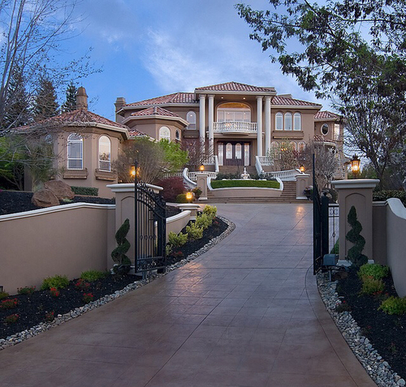

Quality Automated Gates in Daresbury Delph Cheshire England WA4 4
Wrought Iron Gates Daresbury Delph Cheshire England WA4 4

Why Wrought Iron rather than a Wooden Entrance or Steel Framed Gate? That is merely a concern of your personal taste, as well as the look you need to accomplish. Among the possible benefits of Wrought Iron entrances is they do not block your view out beyond them, or obstruct sunlight can be found in. Truthfully, it's not a inquiry of which is a lot better, more so, easily which choice you will certainly discover much more pleasing.
Friends of Midsummer Common 2010 AGM
On the 17th of March 2010 I and about thirty others attended an annual general meeting of the Friends of Midsummer Common. This was a meeting, open to all, which had been advertised on the common.
Interesting Points
- Council officer Alistair Wilson reported that the Horse Chestnuts on Victoria avenue have only a year or two left [before the council will be seeking to fell them].
- Planting a new orchard began on the 19th and 20th of March; local trees are being used and in a typically Cambridge fashion an experiment is being run to see if trees planted in round or square holes fare best. Also an apple chutney group has been established despite a first harvest not being expected for a few years.
- Trees recently felled on the common have not been replaced despite assurances from Cllr Julie Smith and other councillors. Cllr Smith says there is time to come up with a plan during summer 2010 for new strategic planting in winter 2010/11. Cllr Smith had planned, and promised, be in a position to replant during 09/10 planting season but failed. We need to be as visionary and forward thinking as those who planted the existing avenue on Victoria Avenue and the plane tree avenue on Jesus Green.
- Cllr Smith revealed that the reason the, needed to apply for its own licence at all was because the City Council had refused it permission to use the council’s, existing, licence for the common. Council officers reported it was expected that magistrates would have only decided the police’s appeal against the new licence being granted.
- The Chair of the Friends of Midsummer Common, Mr Baxter, reported the City Council had given him a litter picker. He has also been on a number of orchard planting courses, including one in Belgium, though who funded those wasn’t revealed.
- Those serving community service sentences by working on the common can’t be asked to pick litter as there is no “skills development” involved in that task; they have however been used to paint all the railings in the last year.
City Council Officers’ Presentation
The meeting started with a presentation by two city council officers, Sarah Tovell and Alistair Wilson, members of the “active communities” team. Sarah Tovell said her role was “development” of open space; Mr Wilson introduced himself as the “Green Spaces Manager” saying he was responsible for “strategy and development”.
They said that three meadows had been sown on the common in an attempt to increase species diversity and claimed to be “committed to replanting trees”. They also told the meeting they wanted to “make the invisible visible and explain why they cut the grass and why meadows had been planted. The fact that the first of the trees in the new Orchard were due to be planted on the coming weekend was mentioned.
Questions to Council Officers
Drinking and Dispersal onto the Common
Public questions to the council officers followed their presentation. The first asked what was being done about an increase in “street people drinking on the common”, the person raising the point said “it doesn’t enhance the environment”. They pointed out that common now forms the boundary of the current dispersal zone (). The questioner said they had contacted the police but had been told by them that it was a question for the city council.
Responding; council officer Mr Wilson said he would pass the comment on to the council’s Anti-Social Behaviour team and asked if it would help if benches were removed.
Vandalism of the Orchard
The next question asked how vandalism can be prevented at the new orchard and what can be done to stop the area becoming a haven for drug dealing and drug taking. Mr Wilson replied to say he hoped that “natural surveillance” from overlooking properties would help.
Litter
A member of the public then asked about rubbish in bushes, some of which he said had been left uncleared for six or seven months. The chairman of the Friends of Midsummer Common reported that Cambridge City Council had given him a litter grabber which he uses to pick litter. The questioner wasn’t clear about exactly where the rubbish he was talking about was.
It was asked why those doing community service, who’re often seen sitting on the common in their orange jackets with “community payback” written on the back, couldn’t pick litter. Council officer Mr Wilson reported that projects for them to do had to involve some element of “skills development” and while painting does, litter picking does not. A freedom of information request I made for revealed that “clearing and tidying” is considered a valid use of their time. Personally I think it would be fantastic if those on community sentences could be joined by members of the Friends of Midsummer Common and other volunteers I expect in Cambridge they’d probably be oversubscribed with those eager to help.
Path to Pub/Restaurant
The state of the path between Victoria Avenue and the Pub/Restaurant was raised next, with driving and turning on the grass resulting in lots of mud being the problem. This question was addressed later in the meeting.
Mowing Timetable
A member of the public asked if the timetable for mowing could be published; and if mowing could take place other than just to get the common ready for fairs. Mr Baxter suggested that mowing ought be timed to cut down weeds rather than being in advance of events, but he also said that ideally we want the cattle to eat the grass and weeds not mow.
Litter
Andy Rankin reported that the Camboaters were not organising a Cam Cleanup this year, but said he thought that if the Friends of Midsummer Common organised something it would be supported by boaters.
Mooring Rings
While he was speaking Mr Rankin also asked about the cast iron mooring rings which have been taken away from the common. Mr Wilson said he had the mooring rings, and was using one as a door-stop in his city council office. He said there was an intent to have them all re-blasted and refitted to the mooring bollards proposed. (See my article: )
Noticeboard and Cllr Bick’s Election Commitments
A noticeboard was suggested by a member of the public; one reason given was that those trying to stop people lighting fires and damaging the grass by having BBQs have nothing to point to to show that such behaviour is not permitted.
The discussion on noticeboards resulted in Mr Baxter asking if this was something which Cllr Bick, who was present, had promised as part of his personal election manifesto, along with an electric gate which would control vehicular access to the common. Cllr Bick responded to say it was something which could be discussed at a meeting to be held the next day within the council to follow up the friends’ meeting. Mr Baxter said to Cllrs Bick and Smith: “Surely the council does what you suggest”, to which Bick said “If only” and Cllr Smith shrugged. This lack of a grip on power is in my view a real problem with the local Liberal Democrats. The question of the gate was returned to later.
While I think that the internal council meeting with respect to Midsummer Common appears to be being used much more reasonably than the Jesus Green stakeholder meeting has been I think both ought have their attendees, minutes and agendas published and ought be open to the public.
Chairman’s Report
Dick Baxter, the chair of the Friends of Midsummer Common addressed the meeting. He said that last year his report had been damming, particularly of the council. He said “That’s history” and reported that things had been better in 2009 and the common was in much better shape than it had been a year ago. He said he had spent a lot of time moaning at council staff and councillors but said: “it works”. He reported that seven diseased and dangerous trees and been cut down; he said the council had been erring on the side of caution but said he and the Friends of Midsummer Common were “not happy but had been persuaded” the council was doing the right thing. Mr Baxter reported he had spoken in favour of the tree felling at the planning meeting (which had advised Cllr Smith to let order the fellings). My .
Mr Baxter spoke scathingly about the fact that while councillors had promised to replace the trees which they had cut down this hasn’t happened. He said he, and the friends were upset that they had not gone back and described this as the bad news of the year.
Turning to the cattle he said they were technically “steers” now cows (and certainly during the year – bulls!).
Mr Baxter spoke about his efforts to get the lighting on the footpath reinstated saying it was difficult to deal with the councils when they insisted the lights were on but he was looking at them and they were not.
The railings all round the common had been painted in the last year, courtesy of, in Mr Baxter’s words: “The ASBO people”.
On the 2009 Strawberry Fair Mr Baxter said that all parties had put lots of effort into improvements and it had been much better than previous years, he said that fencing off the “neighbourhood area” had been the major contribution.
The Friends of Midsummer Common had engaged with consultation on redevelopment of the Regional College Site, which overlooks the common, though Mr Baxter said he was surprised to see the developers cite the Friends as supporters of the application in the planning application. He said there would be a visual impact, but noted what was there before wasn’t particularly great visually. He said there had been discussions relating to control of access to the common from the site. He said he was currently reviewing the paperwork relating to S.106 contributions from the site but said: “what they could have done for the common has got lost” and the funding had been “diverted to other areas” despite this he said he hoped there was still “room for some argument”. In response to a query from a member of the public Mr Baxter said the new development would be 4-5 stories.
Cllr Julie Smith – Executive Councillor for Green Spaces, Arts and Recreation (Liberal Democrat)
Cllr Smith addressed the meeting. She said that some of the matters raised did not come under her portfolio, or those of the “active communities” council officers present. On the dispersal orders she said that was “ultimately the decision of the leader of the council”, though she said her view was that changing the dispersal zones was “not the first solution” to problems with drink and drugs. On litter again, despite being in charge of the city’s green spaces she gave the impression there was little that she directly could do, she said: “I can try and persuade ‘Streetscene’ (a council department) that there is a problem”.
Cllr Smith didn’t try and deny responsibility for lack of a strategy for new tree planting and not replacing the felled trees; she said: “I feel at least as frustrated as anyone else as I made a commitment last year”. She said she had spoken to John Preston, who she described as the boss of the council’s chief tree officer Diana Oviat -Hamm. She said a view had been taken that it was not appropriate to replace trees like for like in advance of deciding on a planting scheme. Cllr Smith came up with a vague date of “late June / July” for a meeting outside on the common to talk about the possibilities. She said there was time then following that meeting for proposals to be drawn up and planted in the winter of 10/11.
On Strawberry Fair Cllr Smith said that the City Council has a licence for Midsummer Common but this year the licensees – council officers – had decided not to allow the fair to use the council licence requiring it to apply to the council for a new one. She reported that the police opposed the application for a new licence, on the grounds that all four licensing objectives were being breeched and that the police had appealed to magistrates when councillors made the decision to approve the new licence. Cllr Smith said that permission to use the common had been given by the council whereas council officer Mr Wilson said no request from the fair to use the common had been received this year. Mr Wilson said that the expected date for magistrates determining the appeal was just one week before the proposed date of the fair.
Community Orchard
Mr Baxter reported that his had come out of the management plan. He reported he had been “sent to Belgium” to be trained on orchards (I think the suggestion may have been he’d needed training by the European Union before being allowed to plant some fruit trees). He told the meeting the most interesting snippet from his training was learning about one Belgian man who’d grafted 300 species of apple onto one apple tree. He’d been meeting with other orchard experts too and said he’d found out after all this effort that the biggest issue in orchard planting was if trees ought be placed in a square or round hole. He related that there is a school of thought which says roots can get funnelled to the corners of square holes. In light of this unsolved questions the new Midsummer Common orchard would be planted with half the trees in round holes and half in square ones.
All the trees to be planted are genuinely local species, all from Cambridgeshire. The first tranche of trees will be fifteen apple and four crab-apples. He warned that at first the trees would appear like walking sticks in the ground. He said that despite this an apple chutney group had been formed in anticipation of the first harvest.
Next year plums, gages, and pears are to be planted. Cambridge is supposedly famous for its gages, and the pears are to be .
The orchard is on the area of the common next to the allotments; its the raised area higher than the rest of the common on which the cows used to be placed for a few days during events.
Cows – Angelika von Heimendahl
Angelika von Heimendahl spoke to the meeting. She said she had applied to the council to graze 35 cows on the city’s commons later this year; 8-10 of which would be on Midsummer Common. She said the meat would be available for sale at local butchers and via a stall on the market. The cows which are to go onto Midsummer Common spent last year on Grantchester meadows where 40 young cows had been for 2009. The meeting was told that on Grantchester meadows better suited the younger cows as they were let out once then brought back in at the end of the season. von Heimendahl told the meeting she has 70 cows, all red polls, in total.
von Heimendahl also told the meeting that a ramp in the river, by Victoria Avenue bridge, is to be installed soon to help the cows out when they end up in the river. (This is something , before the cows were re-introduced to the common as the previous ramp, by the cutter ferry bridge, had deteriorated. von Heimendahl said she appreciated the ramp would need maintenance, perhaps annually. Personally I think having the ramp upstream is rather crazy as it will be harder to coax a cow upsteam than down – particularly if there is a fast stream on the river.
When asked why it took so long for the cows to be returned after events von Heimendahl said there was almost no grass left after the Strawberry Fair. She said that now the area on the other side of the cutter ferry bridge has been made accessible to the cows they will be able to stay there for longer. It was explained that the cows were solely grass fed (for flavour and texture) and as beef cattle they have to be fattened up and there needs to be a good amount of grass for them to eat. The pound area can only sustain the cows for three days; access to the area on the other side of the cutter ferry bridge means the cows can more easily be kept close to the common for longer.
Mr Baxter related a funny story about how on the day of the Strawberry Fair the cows were still out on the common. Having called but not got a response he and Barry Higgs and gone out and herded the cows together and began walking them towards the pound. On the way they started to run and Mr Baxter and Mr Biggs struggled to keep up, they were rather baffled until they arrived in the pound to see Angelika von Heimendahl shaking a bucket of feed and were told that all their efforts herding the cows hadn’t been necessary as all she had to do was shake her bucket and they’d come running from anywhere on the common.
Horse Chestnut Avenue
When asked about the health of these trees Mr Wilson said that most of the trees were affected by both the leaf moth and now bleeding canker. He said there was only “a year or two before the end of these”.
Commenting on locations for new planting he said there were already objections from those living on North Terrace to trees being planted in-front of their homes. He pointed to the large sum of money the council was making available for the replanting and said schemes of the scale seen in the 1890s – when the existing avenues were planted were possible.
The Gate on the Path to the Pub/Restaurant
A member of the public suggested the solutions to the problem were “not rocket science”. Cllr Bick said the reason he had not made good on his election pledge to get an electric gate installed was that the Friends of Midsummer Common had not supported a scheme. Mr Baxter said this was because no suitably robust and suitably priced scheme had been proposed. It was reported that EDF electricity had quoted £20,000 for installing an electricity supply to the site. A member of the public asked why it could not be powered from nearby street lamps.
Andy Rankin, who lives on a boat on the common and runs had been elected to one of the vacant spots on the Friends of Midsummer Common Committee. He said that he thought solar power would be an option for powering the gate. He offered to “do the sums” and council officers indicted they would be keen to talk to him; Cllr Smith expressed support for the idea as a “green” solution.
One person, Wendy Andrews, spoke against any strengthening of the grass () saying that this would be the start of a slippery slope to permitting parking on the common.
One person suggest council vehicles were also a problem, though this was not a generally supported view as the problem is concentrated near the pub/restaurant. A suggestion that a maximum size of vehicle allowed on the common ought be introduced as delivery lorries, particularly a regular delivery vehicle from , were considered too big. A suggestion of reminding all taxi companies again that they ought not drive on the common, unless for a disabled passenger, was made.
Bus Parking
Finally someone raised the bus parking on Victoria Avenue, saying more buses were parking there for longer periods and detracting from the visual appearance of the area. Liberal Democrat County Councillor Sarah Whitebread appeared to agree this was a problem and said she would take it up.
Cllrs Whitebread, Bick and Smith were present. Cllrs Rosenstiel and Dixon sent their apologies. Mr Baxter declared his interest in the common – it is his front garden, the front door of his house opens onto it.
See Also
- – lots of photographs of the trees lost in the last year.
Why Wrought Iron as opposed to a Wooden Gate or Metal Mounted Gate? One of the feasible advantages of Wrought Iron entrances is they do not block your view out past them, or obstruct sunlight coming in. It is definitely great for your brand new Wrought Iron gate to operate as well as look stunning the day it's installed, yet if the materials used are not the finest, our recently added road charm can be short lived.
Wrougnt Iron Gates near Daresbury Delph Wrougnt Iron Gates near Daresbury Delph